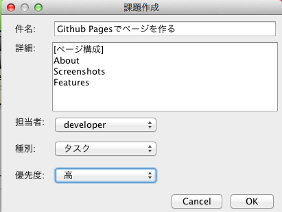
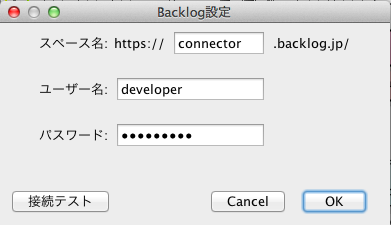

ソフトウェア設計支援ツール astah(旧JUDE) から、Backlogの課題を確認/作成/編集ができるastahプラグインです。
astah community, UML, professionalの何れかにインストールして利用します。なお、プラグインはastahのバージョン6.5以上で動作します。
Backlog Connector for astahは、astahにインストールするプラグインとしてデザインされています。
Mac OS X
/Applications/astah community/plugins
Windows
C:¥Program Files¥astah-community¥plugins
Backlog上の課題一覧を確認できる。URLを選択して、ブラウザでBacklogのページを開くこともできる。
件名や詳細、種類、優先度を設定して、Backlogに課題を新規に追加できる。
Backlogの接続先プロジェクトを切り替えることができる。
astahから接続するBacklogの接続情報を編集できる。
Licensed under the Apache License, Version 2.0